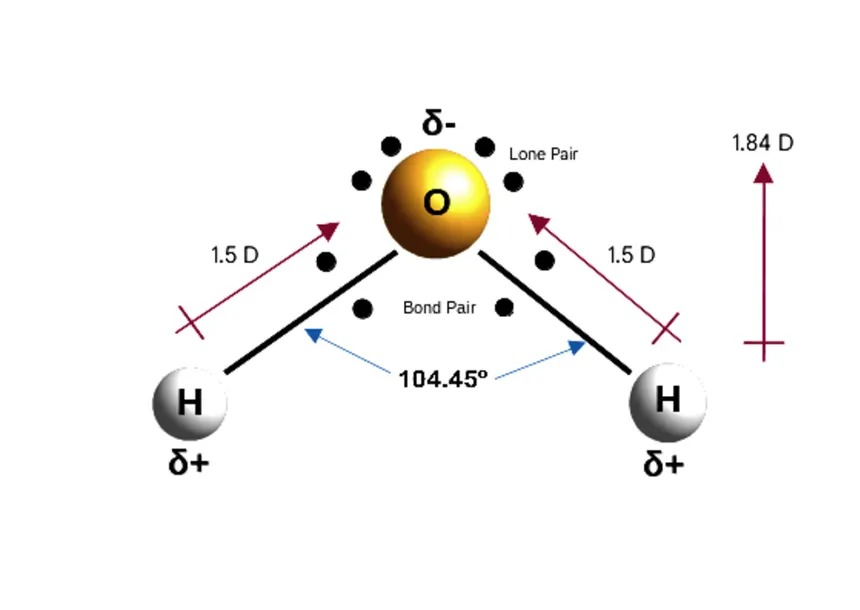
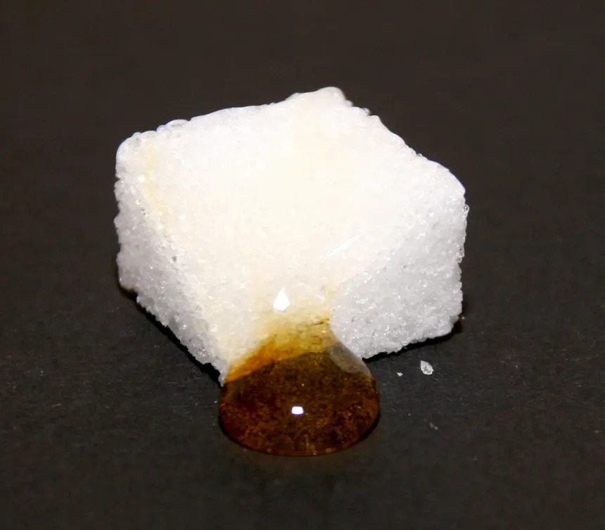

Apa
Apa este prezentă în majoritatea alimentelor și influențează textura, dizolvarea și multe reacții chimice.
Vezi detalii și exemple →Această pagină explică cele mai importante noțiuni despre ce conține un aliment și de ce aceste componente influențează gustul, culoarea, textura și stabilitatea lui.
Apa este prezentă în majoritatea alimentelor și influențează textura, dizolvarea și multe reacții chimice.
Vezi detalii și exemple →Carbohidrații oferă energie și pot influența gustul, consistența și rumenirea.
Vezi detalii și exemple →Lipidele contribuie la aroma, la senzația de cremos și la unele proprietăți de textura.
Vezi detalii și exemple →Proteinele își pot schimba structura atunci când sunt încălzite, agitate sau puse într-un mediu acid.
Vezi detalii și exemple →Textura, culoarea și stabilitatea apar din felul în care apa, lipidele, proteinele și carbohidratii interacționează între ele.
pH-ul arată cât de acid sau bazic este un aliment și poate influența gustul, culoarea și stabilitatea lui.
Enzimele sunt substanțe care accelerează anumite reacții și pot provoca schimbări vizibile în alimente.
Cardul vizual susține explicatia despre dizolvare, transfer și influența cantității de apă.
Imaginea se leaga direct de alimentele bogate in glucide si de rolul lor in energie, textura si rumenire.
Cardul vizual se potriveste mai bine cu exemplele despre uleiuri, nuci, peste si rolul grasimilor in aliment.
Imaginea merge direct cu sursele principale de proteine si pregateste mai bine explicatia despre denaturare si coagulare.
Ajută la păstrarea alimentului pentru mai mult timp.
Reduc oxidarea unor compuși sensibili.
Ajută două faze diferite să rămână amestecate mai stabil.
Schimbă vâscozitatea și consistența produsului.
Galeria leaga notiunile teoretice de exemple vizuale simple, usor de recunoscut.
Apa sustine dizolvarea, miscarea substantelor si multe dintre reactiile observate in alimente.

Polaritatea explica de ce apa dizolva usor multe substante si de ce interactioneaza diferit fata de grasimi.
Painea, pastele, porumbul sau cartofii arata cat de prezenti sunt carbohidratii in alimentatia zilnica.

La contactul dintre un lichid si un solid poros apar rapid schimbari locale de aspect, umiditate si consistenta.
Carnea, pestele, ouale, lactatele si leguminoasele sunt exemple clare de surse bogate in proteine.
Lipidele dau satietate si aroma, dar sunt si sensibile la oxidare, lumina si temperaturi nepotrivite.